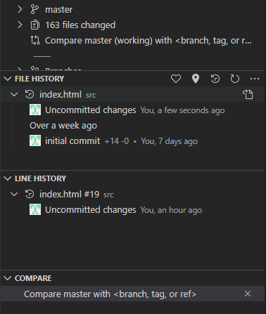
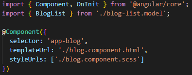
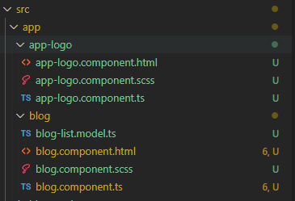
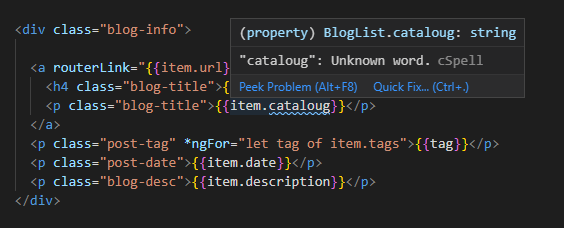

Adding extensions to your IDE is a vital step for developers as it can save up a lot of time, automate the mundane, and even make your screen pleasant by giving it an aesthetic visual rhythm.
Visual Studio Code offers a wide range of extensions that can be downloaded and installed - either for the current workspace or globally. You can open the marketplace in VS Code by pressing 'Shift + Ctrl + X'.
Listed below are 8 of the must-have VS Code extensions for angular UI development.
GitLens - Git supercharged:

5,103,691 installs.
4.9 out of 5 (364 ratings)
A powerful extension to VS Code's built-in version control capabilities.
Check the edit history by the line, compare your working code with different branches in the origin and so on.

Bracket Pair Colorizer:

862,255 installs.
4.4 out of 5 (70 ratings)
All matching colors to your brackets in the code.
'Colorize' your matching brackets using this extension. The matching brackets in your code are automatically given matching colors thus mitigating the missing brackets problem that coders often face. It also adds a little bit of color to the IDE. The users can also fine-tune the extension with the preferred colors set and maintain an aesthetic visual rhythm.

Material Icons Theme:

4,135,675 installs.
4.9 out of 5 (142 ratings)
Popular and highly rated. Add an appealing, material-theme based icons to your files. Not only are the icons minimalistic and well-crafted, but it also vastly improves your navigation and flow within the IDE.
Popular and highly rated, with users even asking it to be made as the default icons set for VS Code.

Code Spell Checker

1,334,826 installs.
4.3 out of 5 (122 ratings)
A coder once created a class file named ProgramCataloug instead of ProgramCatalog - and so it remained for years! Currently, everyone has gotten so used to it and Cataloug seems like the new normal!
Add this spell checker to your IDE and save your code from spelling errors. This extension even understands CamelCase.

TypeScript Toolbox:
A typescript handyman for coding. Add and Optimize imports. Dynamically create a constructor based on private variables - Particularly useful for eclipse IDE users who are used to generating bean classes using the built-in tool.
Better Comments

862,154 installs.
4.4 out of 5 (70 ratings)
Comments are vital to understanding the code written by varied coders with varied perspectives. Improve your commenting skills by adding this extension. If you don't use helpers like TODO, '!' and '?' in your comments, you will find it compelling to use once you install this plugin and see how sorted out your comments look. The helper tags are also completely customizable.
Prettier Formatter

795,085 installs.
4.8 out of 5 (73 ratings)
Calling itself an 'opinionated' code formatter, this extension enforces a consistent layout to your code even when collaborating across teams. Also, VS Code does not format stylesheets by default. Enable this and let the mundane part get automated.
Once installing make sure you enable 'Format on Save' from VS Code's settings.
Auto Rename Tag:

2,827,089 installs.
3.1 out of 5 (100 ratings)
Want to change span to p tag? No more hunting for matching end tags.
This powerful extension automatically takes care of the renaming the matching end tags and saves up your time. You can dynamically watch the end tag renaming itself as you renaming the start tag. Powerful and a must-have!
Posted on: November 20, 2019